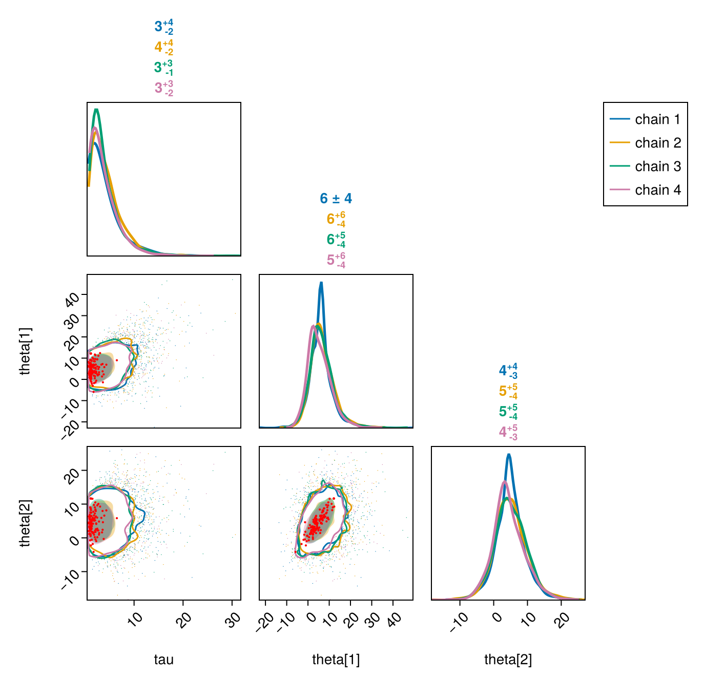

Integrations with other packages
FlexiChains is most obviously tied to the Turing.jl ecosystem, as described on the previous pages. However, it also contains some useful links to other packages (listed here in alphabetical order).
(Your custom sampler here...!)
If you have written a sampler that conforms to the AbstractMCMC interface, then you can get 'free' support for bundling into a FlexiChain{VarName} and a FlexiChain{Symbol} respectively by overloading these functions:
FlexiChains.to_vnt_and_stats — Function
to_vnt_and_stats(transition)::Tuple{VarNamedTuple,NamedTuple}Convert the first output (i.e. the 'transition') of an AbstractMCMC sampler into a VarNamedTuple mapping parameter names to their values, plus a NamedTuple of any additional statistics.
The VarNamedTuple will be converted into Parameter keys, and the NamedTuple into Extra keys.
If you are writing a custom AbstractMCMC sampler and want to allow users to collect the samples as a FlexiChain{VarName}, i.e.,
sample(...; chain_type=FlexiChain{VarName})then you should ensure that your method of AbstractMCMC.step returns a transition that can be passed to this method. (The other return value, the state, is not relevant.)
Note that this method is already implemented for DynamicPPL.VarNamedTuple (in which case the stats are empty) as well as DynamicPPL.ParamsWithStats. Thus the easiest solution is to just return one of those types.
FlexiChains.to_nt_and_stats — Function
to_nt_and_stats(transition)::Tuple{NamedTuple,NamedTuple}Convert the first output (i.e. the 'transition') of an AbstractMCMC sampler into a NamedTuple mapping parameter names to their values, plus a NamedTuple of any additional statistics.
The first NamedTuple will be converted into Parameter keys, and the second NamedTuple into Extra keys.
If you are writing a custom AbstractMCMC sampler and want to allow users to collect the samples as a FlexiChain{Symbol}, i.e.,
sample(...; chain_type=FlexiChain{Symbol})then you should ensure that your method of AbstractMCMC.step returns a transition that can be passed to this method. (The other return value, the state, is not relevant.)
As a concrete example, let's use the following setup:
using FlexiChains: FlexiChains, FlexiChain
using AbstractMCMC
struct M <: AbstractMCMC.AbstractModel end
struct S <: AbstractMCMC.AbstractSampler end
struct T end
function AbstractMCMC.step(rng, ::M, ::S, state=nothing; kwargs...)
T(), nothing
endHere T represents what AbstractMCMC calls a 'transition': it is the first return value of AbstractMCMC.step. Of course, in practice, your transition will carry more information than this.
Now suppose you want to sample with this and obtain a FlexiChain{Symbol}. As the docstrings above allude to, you will want to overload to_nt_and_stats:
FlexiChains.to_nt_and_stats(::T) = ((;hello=1.0), (;world=2.0))Then you can do
sample(M(), S(), 10; chain_type=FlexiChain{Symbol})╭─FlexiChain (10 iterations, 1 chain) ─────────────────────────────────────────╮
│ ↓ iter = 1:10 │
│ → chain = 1:1 │
│ │
│ Parameters (1) ── Symbol │
│ Float64 hello │
│ │
│ Extras (1) │
│ Float64 world │
╰──────────────────────────────────────────────────────────────────────────────╯Likewise for VarNamedTuple (although in this case, you should think carefully about whether you really need VarNamedTuple: if your sampler transition does not carry enough information to justify the richer data type, then it would probably be more meaningful to stick to NamedTuple and FlexiChain{Symbol}).
using DynamicPPL: VarNamedTuple, VarName
FlexiChains.to_vnt_and_stats(::T) = (VarNamedTuple(hello=1.0), (;world=2.0))
sample(M(), S(), 10; chain_type=FlexiChain{VarName})╭─FlexiChain (10 iterations, 1 chain) ─────────────────────────────────────────╮
│ ↓ iter = 1:10 │
│ → chain = 1:1 │
│ │
│ Parameters (1) ── VarName │
│ Float64 hello │
│ │
│ Extras (1) │
│ Float64 world │
╰──────────────────────────────────────────────────────────────────────────────╯AdvancedHMC.jl
Documentation for AdvancedHMC.jl
FlexiChains.to_nt_and_stats is overloaded for AdvancedHMC.Transition, so you can sample with AdvancedHMC into a FlexiChain{Symbol}. This is a slightly simplified version of the example in the AdvancedHMC README (here we use an analytical gradient rather than automatic differentiation):
using AdvancedHMC, AbstractMCMC
using LogDensityProblems
using FlexiChains: FlexiChain
# Set up AD-aware log-density function
struct LogTargetDensity
dim::Int
end
LogDensityProblems.logdensity(::LogTargetDensity, θ) = -sum(abs2, θ) / 2
LogDensityProblems.logdensity_and_gradient(::LogTargetDensity, θ) = (-sum(abs2, θ) / 2, -θ)
LogDensityProblems.dimension(p::LogTargetDensity) = p.dim
function LogDensityProblems.capabilities(::Type{LogTargetDensity})
return LogDensityProblems.LogDensityOrder{1}()
end
chn = AbstractMCMC.sample(
LogTargetDensity(10), AdvancedHMC.NUTS(0.8), 20;
n_adapts=10, chain_type=FlexiChain{Symbol},
)╭─FlexiChain (20 iterations, 1 chain) ─────────────────────────────────────────╮
│ ↓ iter = 1:20 │
│ → chain = 1:1 │
│ │
│ Parameters (1) ── Symbol │
│ DimensionalData.DimVector{Float64, Tupl… params │
│ │
│ Extras (12) │
│ Int64 n_steps, tree_depth │
│ Bool is_accept, numerical_error, is_adapt │
│ Float64 acceptance_rate, log_density, hamiltonian_energy, │
│ hamiltonian_energy_error, max_hamiltonian_energy_error, step_size, │
│ nom_step_size │
╰──────────────────────────────────────────────────────────────────────────────╯ArviZ.jl
FlexiChains contains an extension that allows you to convert a FlexiChain into an InferenceObjects.InferenceData (InferenceObjects.jl is one of the sublibraries of ArviZ.jl, and is re-exported by ArviZ).
InferenceObjects.convert_to_inference_data — Function
InferenceObjects.convert_to_inference_data(
chain::FlexiChain{<:TKey}; group::Symbol = posterior, kwargs...
) where {TKey}Convert a FlexiChain to an InferenceObjects.InferenceData object.
The group keyword argument specifies the group name for the chain's parameters. The chain's extras are assigned to :sample_stats if group is :posterior, and to :sample_stats_<group> otherwise.
Other keyword arguments are passed to InferenceObjects.convert_to_dataset.
For example:
using InferenceObjects, FlexiChains, DynamicPPL, Distributions
@model function f(y)
x ~ Normal()
y ~ Normal(x)
end
model = f(1.0)
chn = FlexiChains._make_prior_chain(model, 100, 2)
idata = InferenceObjects.convert_to_inference_data(chn)posterior
┌ 100×2 Dataset ┐ ├───────────────┴─────────────────────────────────────── dims ┐ ↓ draw Sampled{Int64} 1:100 ForwardOrdered Regular Points, → chain Sampled{Int64} 1:2 ForwardOrdered Regular Points ├───────────────────────────────────────────────────── layers ┤ :x eltype: Float64 dims: draw, chain size: 100×2 ├─────────────────────────────────────────────────── metadata ┤ Dict{String, Any} with 1 entry: "created_at" => "2026-07-01T14:21:04.974" └─────────────────────────────────────────────────────────────┘
sample_stats
┌ 100×2 Dataset ┐ ├───────────────┴───────────────────────────────────────── dims ┐ ↓ draw Sampled{Int64} 1:100 ForwardOrdered Regular Points, → chain Sampled{Int64} 1:2 ForwardOrdered Regular Points ├─────────────────────────────────────────────────────── layers ┤ :logprior eltype: Float64 dims: draw, chain size: 100×2 :loglikelihood eltype: Float64 dims: draw, chain size: 100×2 :logjoint eltype: Float64 dims: draw, chain size: 100×2 ├───────────────────────────────────────────────────── metadata ┤ Dict{String, Any} with 1 entry: "created_at" => "2026-07-01T14:21:05.846" └───────────────────────────────────────────────────────────────┘
You can combine multiple InferenceData objects with merge:
llike_chn = DynamicPPL.pointwise_loglikelihoods(model, chn)
idata2 = InferenceObjects.convert_to_inference_data(llike_chn; group=:log_likelihood)
idata_merged = merge(idata, idata2)posterior
┌ 100×2 Dataset ┐ ├───────────────┴─────────────────────────────────────── dims ┐ ↓ draw Sampled{Int64} 1:100 ForwardOrdered Regular Points, → chain Sampled{Int64} 1:2 ForwardOrdered Regular Points ├───────────────────────────────────────────────────── layers ┤ :x eltype: Float64 dims: draw, chain size: 100×2 ├─────────────────────────────────────────────────── metadata ┤ Dict{String, Any} with 1 entry: "created_at" => "2026-07-01T14:21:04.974" └─────────────────────────────────────────────────────────────┘
log_likelihood
┌ 100×2 Dataset ┐ ├───────────────┴─────────────────────────────────────── dims ┐ ↓ draw Sampled{Int64} 1:100 ForwardOrdered Regular Points, → chain Sampled{Int64} 1:2 ForwardOrdered Regular Points ├───────────────────────────────────────────────────── layers ┤ :y eltype: Float64 dims: draw, chain size: 100×2 ├─────────────────────────────────────────────────── metadata ┤ Dict{String, Any} with 1 entry: "created_at" => "2026-07-01T14:21:09.271" └─────────────────────────────────────────────────────────────┘
sample_stats
┌ 100×2 Dataset ┐ ├───────────────┴───────────────────────────────────────── dims ┐ ↓ draw Sampled{Int64} 1:100 ForwardOrdered Regular Points, → chain Sampled{Int64} 1:2 ForwardOrdered Regular Points ├─────────────────────────────────────────────────────── layers ┤ :logprior eltype: Float64 dims: draw, chain size: 100×2 :loglikelihood eltype: Float64 dims: draw, chain size: 100×2 :logjoint eltype: Float64 dims: draw, chain size: 100×2 ├───────────────────────────────────────────────────── metadata ┤ Dict{String, Any} with 1 entry: "created_at" => "2026-07-01T14:21:05.846" └───────────────────────────────────────────────────────────────┘
From here you can use the full functionality of ArviZ.jl, which includes various plotting and analysis tools: please see the ArviZ.jl documentation for more info.
DimensionalDistributions.jl
Documentation for DimensionalDistributions.jl
DimensionalDistributions.jl is not yet registered in the Julia package registry; at present you will need to install it from GitHub using ]add https://github.com/sethaxen/DimensionalDistributions.jl.
DimensionalDistributions.jl provides a withdims wrapper which lets you create a distribution that returns DimVectors:
using Turing # reexports MvNormal and I
using DimensionalData: Dim
using DimensionalDistributions
school_dim = Dim{:school}([:a, :b, :c])
dim_mvnormal = withdims(MvNormal(zeros(3), I), school_dim)
rand(dim_mvnormal)If you use this in a Turing model, then this information will be carried through all the way to FlexiChains, and indexing into this parameter will let you get a DimArray of DimVectors. This leads to a particularly elegant outcome when accessing this parameter with the stack=true keyword argument: FlexiChains will return a 3-dimensional DimArray with full dimensional information retained.
using FlexiChains
@model f() = x ~ dim_mvnormal
chn2 = sample(f(), MH(), MCMCThreads(), 5, 2; chain_type=VNChain, progress=false)
chn2[@varname(x), stack=true]For DimArray-valued parameters, the stack=true keyword argument is not necessary in the current version of FlexiChains as stacking happens by default. However in a future version this will be changed such that the default behaviour even for DimArrays is to not stack. Thus it is recommended that you explicitly specify stack=true if you want this behaviour.
Sub-VarName indexing also works.
chn2[@varname(x[1])]In principle, you should be able to even use DimensionalData selectors in the VarName, e.g. chn2[@varname(x[At(:b)])]; however, support for this is slightly flaky due to incomplete implementations of Base.checkbounds for DimensionalData (which is not something that FlexiChains can control). If you try this and find that something doesn't work, please do feel free to open an issue and we can help to upstream it.
JLD2.jl
FlexiChain and FlexiSummary objects can be serialised with JLD2.jl with no fuss. See the Serialization section below for an example.
PairPlots.jl
Documentation for PairPlots.jl
FlexiChains provides two ways to interact with PairPlots.jl.
Firstly, you can directly call pairplot(chn[, param_or_params]) on a FlexiChain. This is a convenience method which includes extra functionality for e.g. highlighting divergent transitions.
PairPlots.pairplot — Function
PairPlots.pairplot(
chn::FlexiChain[, param_or_params];
args::Tuple=(),
pool_chains::Bool=false,
divergences=nothing,
divergences_kwargs::NamedTuple=(; markersize=3, color=:red),
kwargs...
)Create a pair plot for the given chain. Note that PairPlots.jl uses Makie.jl as its plotting backend, so you will additionally need to load a Makie backend (e.g. with using GLMakie or using CairoMakie) before calling this function.
If no parameters are specified, this will plot all parameters in the chain. Note that non-parameter, i.e. Extra, keys are excluded by default. If you want to plot all keys, you can explicitly pass all keys with pairplot(chn, :).
Keyword arguments
args: a tuple of additional arguments to pass toPairPlots.pairplot. This can be used to specify additional series to plot, for example.pool_chains: controls whether to pool all chains together into a single series, or to plot each chain separately.divergences: specifies a key name in the chain that contains a boolean array indicating which samples are divergences. If provided, divergent samples will be highlighted in the plot. Note that for HMC/NUTS chains sampled with Turing.jl, the key name for divergences is (as of Turing v0.43):numerical_error. By default this isnothing, which disables plotting of divergences (because not all chains will have this information).divergences_kwargs: aNamedTupleof keyword arguments which is eventually passed toMakie.scatter, which can be used to control the appearance of the points. Defaults to(; markersize=3, color=:red).
Other keyword arguments are passed to PairPlots.pairplot.
using PairPlots, FlexiChains, Turing, CairoMakie
J = 8
y = [28, 8, -3, 7, -1, 1, 18, 12]
sigma = [15, 10, 16, 11, 9, 11, 10, 18]
@model function eightsch(J, y, sigma)
mu ~ Normal(0, 5)
tau ~ truncated(Cauchy(0, 5); lower=0)
theta ~ MvNormal(fill(mu, J), tau^2 * I)
for i in 1:J
y[i] ~ Normal(theta[i], sigma[i])
end
end
model = eightsch(J, y, sigma)
chn = sample(model, NUTS(), MCMCSerial(), 2000, 4; chain_type=VNChain, progress=false, verbose=false)
# Limit the parameters being plotted for readability
vns = [@varname(tau), @varname(theta[1]), @varname(theta[2])]
# For Turing.jl HMC/NUTS chains, the Boolean indicating whether or not the
# transition was divergent is stored in the `:numerical_error` key. If you
# have a different sampler you just need to specify the appropriate key.
pairplot(chn, vns; divergences=:numerical_error)
For more low-level control, you can also convert a FlexiChain into a PairPlots.Series, so that you can combine it with other data or fixed values in custom plots.
PairPlots.Series — Type
PairPlots.Series(chn::FlexiChain; split_varnames=true, kwargs...)Create a PairPlots.Series from the given FlexiChain. The series data will contain one column for each key in the chain.
Note that this function will include all keys in the chain, including Extra keys. If you only want to include a subset of keys, you should first subset the chain, for example with chn[[key1, key2, ...]], and then pass that subsetted chain in.
If split_varnames is true, then parameters in the chain will be split into their constituent real-valued elements. This is necessary for plotting. In practice there should never be any reason to set this to false, unless you already know that your chain contains only scalar variables and you want to avoid the cost of splitting the variable names again.
PosteriorDB.jl
Documentation for PosteriorDB.jl
If you have loaded a PosteriorDB.ReferencePosterior, you can transform it into a FlexiChain using FlexiChains.from_posteriordb_ref:
using PosteriorDB, FlexiChains
pdb = PosteriorDB.database()
post = PosteriorDB.posterior(pdb, "eight_schools-eight_schools_centered")
ref = PosteriorDB.reference_posterior(post)
chn = FlexiChains.from_posteriordb_ref(ref)╭─FlexiChain (1000 iterations, 10 chains) ─────────────────────────────────────╮
│ ↓ iter = 10010:10:20000 │
│ → chain = 1:10 │
│ │
│ Parameters (10) ── String │
│ Float64 theta[1], theta[2], theta[3], theta[4], theta[5], theta[6], │
│ theta[7], theta[8], mu, tau │
│ │
│ Extras (0) │
│ (none) │
╰──────────────────────────────────────────────────────────────────────────────╯You can then use all the functionality of FlexiChains on chn:
summarystats(chn)╭─FlexiSummary (9 statistics) ─────────────────────────────────────────────────╮
│ iter collapsed │
│ chain collapsed │
│ ↓ stat = [mean, std, mcse, ess_bulk, ess_tail, rhat, q5, q50, q95] │
│ │
│ Parameters (10) ── String │
│ Float64 theta[1], theta[2], theta[3], theta[4], theta[5], theta[6], │
│ theta[7], theta[8], mu, tau │
│ │
│ Extras (0) │
│ (none) │
│ │
│ Summary │
│ param mean std mcse ess_bulk ess_tail rhat … │
│ theta[1] 6.1505 5.6159 0.0559 10049.2107 9629.8020 0.9999 … │
│ theta[2] 4.9396 4.6456 0.0464 9996.0196 10089.3722 1.0001 … │
│ theta[3] 3.9059 5.2807 0.0545 9441.0149 8985.2446 1.0000 … │
│ theta[4] 4.7960 4.7709 0.0476 9991.7265 9631.6656 1.0001 … │
│ theta[5] 3.6144 4.6147 0.0462 9886.2569 10175.6473 1.0000 … │
│ theta[6] 4.0511 4.7962 0.0486 9746.7818 10004.1962 0.9999 … │
│ theta[7] 6.3172 5.0029 0.0500 10007.4700 9549.1189 0.9999 … │
│ theta[8] 4.8840 5.3177 0.0544 9569.4428 9828.3536 1.0003 … │
│ mu 4.4105 3.3093 0.0331 9994.5870 9919.6914 1.0000 … │
│ tau 3.6021 3.1985 0.0320 9954.0515 9873.9898 1.0002 … │
╰──────────────────────────────────────────────────────────────────────────────╯FlexiChains.from_posteriordb_ref — Function
FlexiChains.from_posteriordb_ref(
ref::PosteriorDB.ReferencePosterior
)::FlexiChain{String}Load a PosteriorDB.ReferencePosterior into a FlexiChain. The keys are stored as strings, which matches the storage format in PosteriorDB.jl.
PosteriorStats.jl
Documentation for PosteriorStats.jl
PosteriorStats.jl provides the hdi and eti functions for computing highest density intervals and equal-tailed intervals, respectively. These are overloaded for FlexiChain objects in much the same way as Statistics.mean, Statistics.std, etc. (see the Summarising page for more information). Here is an example:
using FlexiChains, DynamicPPL, Distributions, PosteriorStats
@model function g(z)
x ~ Normal()
y ~ Normal(x)
z ~ Normal(y)
end
model = g(1.0)
chn = FlexiChains._make_prior_chain(model, 100, 2)
PosteriorStats.hdi(chn; prob=0.95, split_interval=true)╭─FlexiSummary (2 statistics) ─────────────────────────────────────────────────╮
│ iter collapsed │
│ chain collapsed │
│ ↓ stat = [hdi_lower, hdi_upper] │
│ │
│ Parameters (2) ── VarName │
│ Float64 x, y │
│ │
│ Extras (3) │
│ Float64 logprior, loglikelihood, logjoint │
│ │
│ Summary │
│ param hdi_lower hdi_upper │
│ x -1.6865 2.0988 │
│ y -2.9882 2.6653 │
╰──────────────────────────────────────────────────────────────────────────────╯PosteriorStats.loo, which computes Pareto-smoothed importance sampling leave-one-out cross-validation (PSIS-LOO), is also overloaded for FlexiChain objects. You can either pass a chain of log-likelihood values, which can be computed via DynamicPPL.pointwise_loglikelihoods(model, chain), or (perhaps more easily) a Turing model plus a posterior chain which just does that for you. For example (although note that the chain above is sampled from the prior — so this is only meant to be a demonstration of the API):
PosteriorStats.loo(model, chn)NamesAndLOOResult
├─ param_names: VarName[z]
└─ loo: PSISLOOResult with estimates
elpd se_elpd p se_p
-6 NaN 4 NaN
and PSISResult with 100 draws, 2 chains, and 1 parameters
Pareto shape (k) diagnostic values:
Count Min. ESS
(1, Inf) very bad 1 (100.0%) ——PosteriorStats.hdi — Method
PosteriorStats.hdi(
chain::FlexiChain{TKey};
dims::Symbol=:both,
warn::Bool=true,
split_varnames::Bool=true,
kwargs...
) where {TKey}Calculate the highest density interval across all iterations and chains for each key in the chain. If the statistic cannot be computed for a key, that key is skipped and a warning is issued (which can be suppressed by setting warn=false).
The dims keyword argument specifies which dimensions to collapse. The default value of :both collapses both the iteration and chain dimensions. Other valid values are :iter or :chain, which respectively collapse only the iteration or chain dimension.
The split_varnames keyword argument, if true, will first split up variables in the chain such that each key corresponds to a single scalar value. This is only supported for chains with TKey<:VarName or TKey==Symbol; for other key types this will be a no-op as long as the data already contain scalar values for every key, but will error if the data contain non-scalar values.
Other keyword arguments are forwarded to PosteriorStats.hdi; please see its documentation for details of supported keyword arguments.
Splitting intervals
The split_interval keyword argument, if set to true, causes the output FlexiSummary to have one statistic column per interval bound, i.e., hdi_lower and hdi_upper. Note that this will only be valid if you request a single interval (i.e., method=:unimodal, which is the default in PosteriorStats.jl).
If you specify method=:multimodal, the returned FlexiSummary will have a single statistic column named hdi that contains a vector of intervals, and the split_interval argument will be ignored.
PosteriorStats.eti — Method
PosteriorStats.eti(
chain::FlexiChain{TKey};
dims::Symbol=:both,
warn::Bool=true,
split_varnames::Bool=true,
kwargs...
) where {TKey}Calculate the equal-tailed interval across all iterations and chains for each key in the chain. If the statistic cannot be computed for a key, that key is skipped and a warning is issued (which can be suppressed by setting warn=false).
The dims keyword argument specifies which dimensions to collapse. The default value of :both collapses both the iteration and chain dimensions. Other valid values are :iter or :chain, which respectively collapse only the iteration or chain dimension.
The split_varnames keyword argument, if true, will first split up variables in the chain such that each key corresponds to a single scalar value. This is only supported for chains with TKey<:VarName or TKey==Symbol; for other key types this will be a no-op as long as the data already contain scalar values for every key, but will error if the data contain non-scalar values.
Other keyword arguments are forwarded to PosteriorStats.eti; please see its documentation for details of supported keyword arguments.
Splitting intervals
The split_interval keyword argument, if set to true, causes the output FlexiSummary to have one statistic column per interval bound, i.e., eti_lower and eti_upper.
PosteriorStats.loo — Method
PosteriorStats.loo(chn::FlexiChains; kwargs...)Calculates the leave-one-out cross-validation (LOO) statistic for a FlexiChain object. The chain must contain only log-likelihood values, and they must all be stored as parameters (not extras). Parameters that map to arrays of log-likelihood values are supported: they will be flattened before being passed to PosteriorStats.loo.
Returns a struct with the following fields:
param_names::Vector: A vector of parameter names whose log-likelihood values were used.loo::PosteriorStats.PSISLOOResult: The return value ofPosteriorStats.looapplied to the log-likelihood values extracted from theFlexiChain. This contains the statistics of interest.
Additional keyword arguments are forwarded to PosteriorStats.loo.
PosteriorStats.loo — Method
PosteriorStats.loo(
model::DynamicPPL.Model,
posterior_chn::FlexiChains;
factorize::Bool=false,
kwargs...
)Calculates the leave-one-out cross-validation (LOO) statistic, given a model plus a posterior chain. This first uses the model and posterior chain to calculate pointwise log-likelihoods, and then uses those to calculate the LOO statistic.
Returns a struct with the following fields:
param_names::Vector: A vector of parameter names whose log-likelihood values were used.loo::PosteriorStats.PSISLOOResult: The return value ofPosteriorStats.looapplied to the log-likelihood values extracted from theFlexiChain. This contains the statistics of interest.
The factorize keyword argument is passed to DynamicPPL.pointwise_loglikelihoods. If factorize=true, factorised log-densities will be calculated for distributions that can be partitioned into blocks (e.g. MvNormal). Please see the docstring of DynamicPPL.pointwise_loglikelihoods for more details.
Additional keyword arguments are forwarded to PosteriorStats.loo.
Serialization.jl
Calling this an 'integration' is a bit of a stretch, because it simply works out of the box (no extra code needed), but it had to be documented somewhere...
You can serialise and deserialise FlexiChain and FlexiSummary objects using the Serialization.jl standard library.
using FlexiChains, Turing, Serialization
@model f() = x ~ Normal()
chn = sample(f(), NUTS(), 10; chain_type=VNChain, progress=false)
fname = "mychain"
serialize(fname, chn)┌ Info: Found initial step size
└ ϵ = 3.2chn2 = deserialize(fname)
isequal(chn, chn2)trueSerialisation with JLD2.jl works as well:
using JLD2
fname, key = "chain.jld2", "chain"
save(fname, Dict(key => chn))
chn2 = load(fname, key)
isequal(chn, chn2)trueNote two things:
If the serialisation and deserialisation steps are performed in different Julia sessions, you need to make sure that you have all necessary packages loaded in the second session. In particular, if you use
save_state=true, then you should load Turing.jl before deserialising, because Turing provides the sampler state types.If you are testing the integrity of (de)serialisation, you may find that
isequal()on sampler state types may not returntrueeven when the sampler states are the same. This is because Julia's default definition of equality for structs is based on object identity, not on field values. For example, the following returnsfalsebecause[1] !== [1].struct Foo{T} t::T end Foo([1]) == Foo([1])false
Stan
FlexiChains has a function to read in chains stored in Stan CSV format:
FlexiChains.from_stan_csv — Function
FlexiChains.from_stan_csv(
base_path::AbstractString, num_chains::Integer
)::FlexiChain{Symbol}Reads the Stan CSV files from {base_path}_1.csv through to {base_path}_{num_chains}.csv. This is a convenience method that recognises the fact that CmdStan saves its outputs in this format.
FlexiChains.from_stan_csv(
csv_paths::AbstractVector{<:AbstractString}
)::FlexiChain{Symbol}Parse a set of Stan CSV files at the given paths.
These files must correspond to a set of compatible chains, i.e., their parameter names, lengths (i.e., number of iterations), and other data should be consistent. This will be the case if they were all drawn from the same call to Stan's sampling. However, note that FlexiChains does only a rudimentary set of checks to ensure consistency: the user should be responsible for ensuring that the CSVs read in are valid.
Columns that end in double-underscores (__) are treated as Extras (the underscores will be stripped), and all other columns as Parameters.
This of course assumes that you already have the CSV files on disk somewhere, e.g. if you have run Stan externally.
If you are using StanSample.jl you can also read data directly from a SampleModel once you have sampled with it.
This code block is not run, as running it would necessitate setting up CmdStan on GitHub runners.
using StanSample, FlexiChains
sm = SampleModel(...)
# Note: this mutates `sm` -- StanSample has a rather unconventional interface
stan_sample(sm; data)
# The key type has to be `Symbol`.
chn = FlexiChain{Symbol}(sm)If you are using BridgeStan.jl and/or StanLogDensityProblems.jl plus a native Julia sampler, you should check whether there is an integration for the sampler in question. For example if you use AdvancedHMC.jl then you can pass the chain_type=FlexiChain{Symbol} keyword argument (see above).
(If the sampler in question does not have an integration with FlexiChains, please feel free to open an issue!)
Tables.jl
FlexiChains implements a Tables.jl interface which allows you to easily convert a FlexiChain or FlexiSummary into any type that consumes tabular data, e.g., a DataFrame.
In fact, FlexiChains implements two different Tables.jl interfaces for chains: one for wide data and one for long data.
This is best demonstrated with an example. First let's sample a chain as usual:
using FlexiChains, Turing, DataFrames
@model function f()
x ~ Normal(10.0)
y ~ Bernoulli()
z ~ MvNormal(zeros(2), I)
end
chn = sample(f(), MH(), MCMCThreads(), 4, 2; chain_type=VNChain, progress=false)╭─FlexiChain (4 iterations, 2 chains) ─────────────────────────────────────────╮
│ ↓ iter = 1:4 │
│ → chain = 1:2 │
│ │
│ Parameters (3) ── VarName │
│ Float64 x │
│ Bool y │
│ Vector{Float64} z │
│ │
│ Extras (4) │
│ Bool accepted │
│ Float64 logprior, loglikelihood, logjoint │
╰──────────────────────────────────────────────────────────────────────────────╯Now we can convert this into a DataFrame in wide format (this is also the default for unwrapped FlexiChains, so you technically don't have to wrap chn in Wide if you don't want to):
DataFrame(Wide(chn))| Row | iter | chain | x | y | z[1] | z[2] |
|---|---|---|---|---|---|---|
| Int64 | Int64 | Float64 | Bool | Float64 | Float64 | |
| 1 | 1 | 1 | 10.4085 | false | 0.316812 | 1.44451 |
| 2 | 2 | 1 | 10.1088 | true | 0.927928 | -2.19175 |
| 3 | 3 | 1 | 10.0571 | true | -0.523413 | -0.400105 |
| 4 | 4 | 1 | 9.80562 | false | 0.223647 | -0.837176 |
| 5 | 1 | 2 | 11.0403 | true | -1.00653 | -0.99199 |
| 6 | 2 | 2 | 11.1609 | false | -0.893037 | -1.42059 |
| 7 | 3 | 2 | 10.4286 | true | -0.456654 | -0.445499 |
| 8 | 4 | 2 | 9.6342 | true | -0.436178 | -1.12982 |
or long format (although notice that this will promote y to Float64):
DataFrame(Long(chn))| Row | iter | chain | param | value |
|---|---|---|---|---|
| Int64 | Int64 | VarName | Float64 | |
| 1 | 1 | 1 | x | 10.4085 |
| 2 | 2 | 1 | x | 10.1088 |
| 3 | 3 | 1 | x | 10.0571 |
| 4 | 4 | 1 | x | 9.80562 |
| 5 | 1 | 2 | x | 11.0403 |
| 6 | 2 | 2 | x | 11.1609 |
| 7 | 3 | 2 | x | 10.4286 |
| 8 | 4 | 2 | x | 9.6342 |
| 9 | 1 | 1 | y | 0.0 |
| 10 | 2 | 1 | y | 1.0 |
| 11 | 3 | 1 | y | 1.0 |
| 12 | 4 | 1 | y | 0.0 |
| 13 | 1 | 2 | y | 1.0 |
| 14 | 2 | 2 | y | 0.0 |
| 15 | 3 | 2 | y | 1.0 |
| 16 | 4 | 2 | y | 1.0 |
| 17 | 1 | 1 | z[1] | 0.316812 |
| 18 | 2 | 1 | z[1] | 0.927928 |
| 19 | 3 | 1 | z[1] | -0.523413 |
| 20 | 4 | 1 | z[1] | 0.223647 |
| 21 | 1 | 2 | z[1] | -1.00653 |
| 22 | 2 | 2 | z[1] | -0.893037 |
| 23 | 3 | 2 | z[1] | -0.456654 |
| 24 | 4 | 2 | z[1] | -0.436178 |
| 25 | 1 | 1 | z[2] | 1.44451 |
| 26 | 2 | 1 | z[2] | -2.19175 |
| 27 | 3 | 1 | z[2] | -0.400105 |
| 28 | 4 | 1 | z[2] | -0.837176 |
| 29 | 1 | 2 | z[2] | -0.99199 |
| 30 | 2 | 2 | z[2] | -1.42059 |
| 31 | 3 | 2 | z[2] | -0.445499 |
| 32 | 4 | 2 | z[2] | -1.12982 |
Both the Wide and Long wrapper structs accept keyword arguments which determine whether array-valued parameters (like z) are split up, and whether or not to include the Extra keys in the chain as well, like Turing log-probabilities.
FlexiChains.Wide — Type
FlexiChains.Wide(
chn::Union{<:FlexiChain,<:FlexiSummary};
split_varnames::Bool=true,
parameters_only::Bool=true
)A wrapper struct indicating a 'wide' table format. The exact meaning depends on whether the input is a FlexiChain or a FlexiSummary. A FlexiChain will have each parameter in a separate column; conversely, a FlexiSummary will have each summary statistic in a separate column.
Example (FlexiChain)
using Turing, FlexiChains, DataFrames
@model function f()
x ~ Normal()
b ~ Bernoulli()
end
chn = sample(f(), Prior(), MCMCThreads(), 10, 2; chain_type=VNChain)
df = DataFrame(Wide(chn))returns a DataFrame that looks like the following. Each parameter is a different column, and the iter and chain dimensions are represented as separate columns as well; iter varies faster than chain.
Because all parameter names must be converted to Symbol for column names, this may lead to clashes between e.g. parameters and extras which convert to the same Symbol. FlexiChains will error in such a situation.
20×4 DataFrame
Row │ iter chain x b
│ Int64 Int64 Float64 Bool
─────┼────────────────────────────────
1 │ 1 1 -1.38809 false
2 │ 2 1 -0.511805 true
3 │ 3 1 -1.37277 false
⋮ │ ⋮ ⋮ ⋮ ⋮
18 │ 8 2 2.31312 false
19 │ 9 2 1.58254 true
20 │ 10 2 -1.14516 falseKeyword arguments
split_varnames: whether to split array-valued parameters into scalar leaves. Iftrue(the default), then array-valued parameters are split into scalar leaves, e.g. a vector-valued parameterxwould be split intox[1],x[2], etc.parameters_only: whether to include only parameters (and skip extras) in the resulting table. Defaults totrue.
Example (FlexiSummary)
julia> df = DataFrame(Wide(summarystats(chn)))
2×10 DataFrame
Row │ param mean std mcse ess_bulk ess_tail rh ⋯
│ VarName… Float64 Float64 Float64 Float64 Float64 Fl ⋯
─────┼──────────────────────────────────────────────────────────────────
1 │ x -0.253812 0.987327 0.193554 26.0206 25.641 ⋯
2 │ b 0.5 0.512989 0.113426 20.4545 NaN Na
4 columns omitted
julia> df = DataFrame(Wide(mean(chn)))
2×2 DataFrame
Row │ param stat
│ VarName… Float64
─────┼─────────────────────
1 │ x -0.253812
2 │ b 0.5FlexiChains.Long — Type
FlexiChains.Long(
chn::FlexiChain;
split_varnames::Bool=true,
parameters_only::Bool=true
)A wrapper struct indicating that a FlexiChain should be converted to a 'long' table format, where all values are stacked into a single column, and there is an additional column indicating the parameter name.
Because all parameter values are stacked into a single column, note that the resulting element type of the value column will be the common supertype of all parameter values. This can cause data to be promoted to a type that is not the same as its original type. For example, the b parameter below is converted to Float64.
Example
using Turing, FlexiChains, DataFrames
@model function f()
x ~ Normal()
b ~ Bernoulli()
end
chn = sample(f(), Prior(), MCMCThreads(), 10, 2; chain_type=VNChain)
df = DataFrame(Long(chn))returns a DataFrame that looks like the following. The iter and chain dimensions are represented as separate columns as before, but now the parameter names are stacked into a single param column, and the values are stacked into a single value column.
The iter column varies faster than the chain column, which in turn varies faster than the param column.
40×4 DataFrame
Row │ iter chain param value
│ Int64 Int64 VarName… Float64
─────┼─────────────────────────────────
1 │ 1 1 x -1.38809
2 │ 2 1 x -0.511805
3 │ 3 1 x -1.37277
⋮ │ ⋮ ⋮ ⋮ ⋮
38 │ 8 2 b 0.0
39 │ 9 2 b 1.0
40 │ 10 2 b 0.0Keyword arguments
split_varnames: whether to split array-valued parameters into scalar leaves. Iftrue(the default), then array-valued parameters are split into scalar leaves, e.g. a vector-valued parameterxwould be split intox[1],x[2], etc.parameters_only: whether to include only parameters (and skip extras) in the resulting table. Defaults totrue.
Additionally, when parameters_only=true (the default), the Parameter wrapper is stripped from keys. Otherwise, the Parameter/Extra wrappers are retained. If you want to unwrap them, you can use FlexiChains.get_name on the param column of the resulting table.
For FlexiSummary, the long format is not (yet?) supported: only the wide format is implemented. In contrast to Wide(::FlexiChain), where each parameter is given a different column, the wide format for FlexiSummary splits each statistic into a separate column.
fs = summarystats(chn)
DataFrame(Wide(fs))| Row | param | mean | std | mcse | ess_bulk | ess_tail | rhat | q5 | q50 | q95 |
|---|---|---|---|---|---|---|---|---|---|---|
| VarName | Float64 | Float64 | Float64 | Float64 | Float64 | Float64 | Float64 | Float64 | Float64 | |
| 1 | x | 10.3305 | 0.546839 | NaN | NaN | NaN | 1.37401 | 9.69419 | 10.2587 | 11.1187 |
| 2 | y | 0.625 | 0.517549 | NaN | NaN | NaN | 0.92582 | 0.0 | 1.0 | 1.0 |
| 3 | z[1] | -0.230928 | 0.662051 | NaN | NaN | NaN | 1.39146 | -0.966809 | -0.446416 | 0.714038 |
| 4 | z[2] | -0.746553 | 1.05354 | NaN | NaN | NaN | 1.1802 | -1.92184 | -0.914583 | 0.798892 |
Like for FlexiChain, the Wide wrapper is the default Tables.jl implementation for FlexiSummary, so you can also just do DataFrame(fs).
Wide(::FlexiSummary) takes the same keyword arguments as Wide(::FlexiChain).
Please note that the act of summarising will typically already cause array-valued variables to be split up. If this has already been done, then using Wide(...; split_varnames=false) cannot reverse this!
w = Wide(mean(chn), split_varnames=false)
DataFrame(w)| Row | param | stat |
|---|---|---|
| VarName | Float64 | |
| 1 | x | 10.3305 |
| 2 | y | 0.625 |
| 3 | z[1] | -0.230928 |
| 4 | z[2] | -0.746553 |
Notice how z[1] and z[2] are already split up despite the split_varnames=false argument. If you want to prevent this, you need to specify split_varnames=false at the summary step as well:
w = Wide(mean(chn; split_varnames=false), split_varnames=false)
DataFrame(w)| Row | param | stat |
|---|---|---|
| VarName… | Any | |
| 1 | x | 10.3305 |
| 2 | y | 0.625 |
| 3 | z | [-0.230928, -0.746553] |